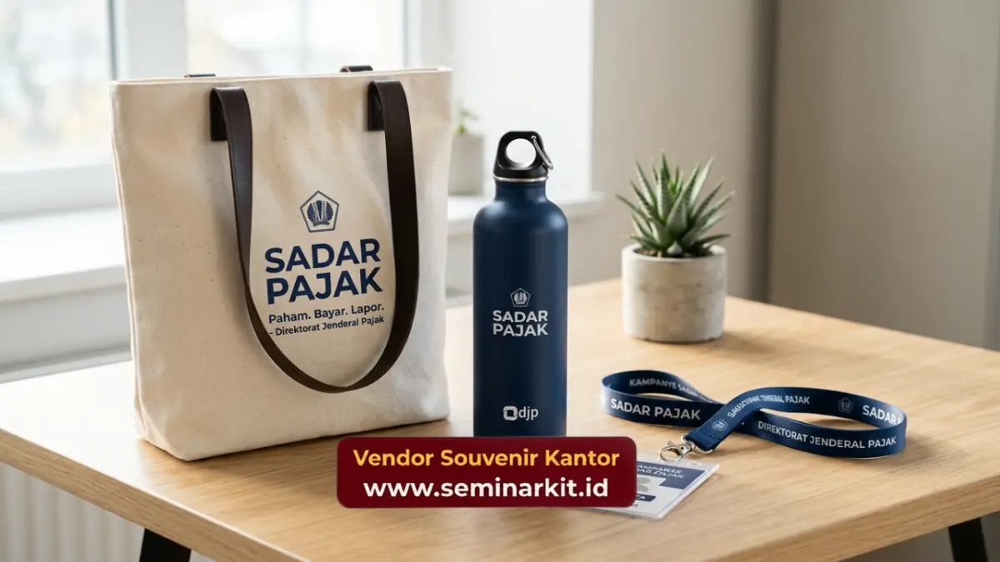

Strategi branding institusi pajak melalui merchandise berfokus pada peningkatan citra positif, penyampaian pesan sadar pajak yang berkesinambungan, dan penguatan relasi dengan masyarakat luas.
Berbeda dengan kampanye digital yang rentan dilupakan dalam hitungan detik, kampanye melalui objek fisik menawarkan persistensi kehadiran di lingkungan pribadi atau profesional target audiens.
Objek fisik yang fungsional secara konsisten mengedukasi tanpa memunculkan kesan memerintah atau menekan.
- Mengubah persepsi birokrasi yang kaku menjadi institusi yang modern dan bersahabat.
- Menyusupkan pesan kepatuhan secara halus melalui aktivitas harian pengguna produk.
- Meningkatkan loyalitas dan kooperasi dari wajib pajak prioritas melalui apresiasi langsung.
- Membangun representasi fisik berkelanjutan yang jauh melampaui batas waktu acara formal.
Bagaimana Objek Fisik Mengubah Persepsi Kaku?
Objek fisik berkualitas mengubah persepsi kaku birokrasi dengan menampilkan wajah institusi yang lebih modern, dinamis, dan sangat mengapresiasi estetika serta kenyamanan warga negara.
Selama ini, stigma birokrasi sering kali dikaitkan dengan tumpukan dokumen, antrean panjang, dan komunikasi satu arah.
Ketika instansi pajak mulai mendistribusikan cinderamata berdesain mutakhir—misalnya botol minum insulasi termal berdesain sleek dengan tipografi logo yang minimalis—institusi tersebut secara langsung memproyeksikan transformasi internal mereka.
Masyarakat menerima pesan visual bahwa instansi ini sekarang dijalankan dengan standar korporasi modern, inovatif, dan berorientasi pada pelayanan prima.
Dampak psikologis dari menerima barang yang berdesain bagus juga sangat kuat. Ada rasa bangga bagi penerima untuk menggunakan barang tersebut di depan umum.
Ketika barang resmi negara dipakai di kedai kopi atau ruang rapat swasta, ia menjadi katalis perbincangan organik.
Citra eksklusif yang terbangun inilah yang mengikis jarak emosional antara aparat pajak dan wajib pajak. Untuk mencapai level kualitas branding yang presisi ini, serahkan segala kerumitan teknis produksi kepada ahlinya dengan memesan secara proaktif di vendorsouvenirkantor.web.id.
Mengapa Distribusi Taktis Sangat Krusial?
Distribusi taktis sangat krusial karena membagikan merchandise bermutu tinggi secara sembarangan akan melenyapkan nilai eksklusivitasnya dan membuat pesan kampanye kehilangan sasaran utamanya.
Dalam dunia kehumasan, pendekatan scatter-gun (menembak ke segala arah tanpa target) tidak lagi relevan, terutama jika menyangkut pengelolaan anggaran logistik. Strategi branding yang baik mengharuskan panitia memetakan profil penerima (audience profiling).
Sebagai contoh, gift set mewah berbahan baku kulit dan logam berat harus dialokasikan khusus untuk wajib pajak korporat terbesar, pimpinan perusahaan mitra, atau narasumber kunci. Pemberian yang tertarget ini mengomunikasikan rasa hormat yang mendalam atas kontribusi signifikan mereka terhadap penerimaan negara.
Di sisi lain, untuk sosialisasi ke wilayah sekolah atau universitas dalam rangka menanamkan kesadaran pajak dini, instansi dapat mendistribusikan merchandise yang lebih dinamis dan trendi seperti tas serut waterproof atau lanyard multifungsi bercorak modern.
Kesesuaian antara jenis barang dan profil penerima memastikan utilitas barang berada pada tingkat maksimal. Apapun jenis audiens yang Anda sasar untuk program strategis ke depan, kami di vendorsouvenirkantor.web.id siap memproduksi beragam lini merchandise yang disesuaikan secara khusus dengan kebutuhan taktis kampanye institusi Anda.

Apa Dampak Psikologis Jangka Panjangnya?
Dampak psikologis jangka panjangnya adalah terbentuknya asas timbal balik (reciprocity) yang memotivasi masyarakat untuk bersikap lebih kooperatif dan responsif terhadap arahan administrasi dari instansi pemberi.
Menurut prinsip psikologi perilaku, ketika manusia menerima sesuatu yang bermanfaat, muncul dorongan instingtif untuk membalas kebaikan tersebut.
Dalam konteks perpajakan, balasan ini bermanifestasi dalam bentuk peningkatan kepatuhan administratif, ketepatan waktu pelaporan, dan sikap kooperatif saat terjadi audit atau pemeriksaan. Benda kecil yang bermanfaat secara harian secara konstan menetralisir sentimen negatif.
Lebih jauh lagi, barang fisik yang ada di atas meja kerja berperan sebagai jangkar visual. Ia terus mengingatkan tentang kewajiban tanpa harus menyuarakan satu kata pun. Strategi ini, yang kerap disebut "kampanye diam" (silent campaigning), terbukti jauh lebih bisa diterima oleh masyarakat modern yang cenderung menolak intervensi langsung.
Jangan lewatkan kesempatan untuk membangun strategi kehumasan pasif namun berdaya ledak tinggi ini. Konsolidasikan rencana pengadaan institusi Anda dan arahkan pesanan dalam volume korporat langsung kepada vendorsouvenirkantor.web.id untuk garansi kepuasan paripurna.

Banner promosi: klik gambar untuk langsung terhubung ke WhatsApp tim sales.